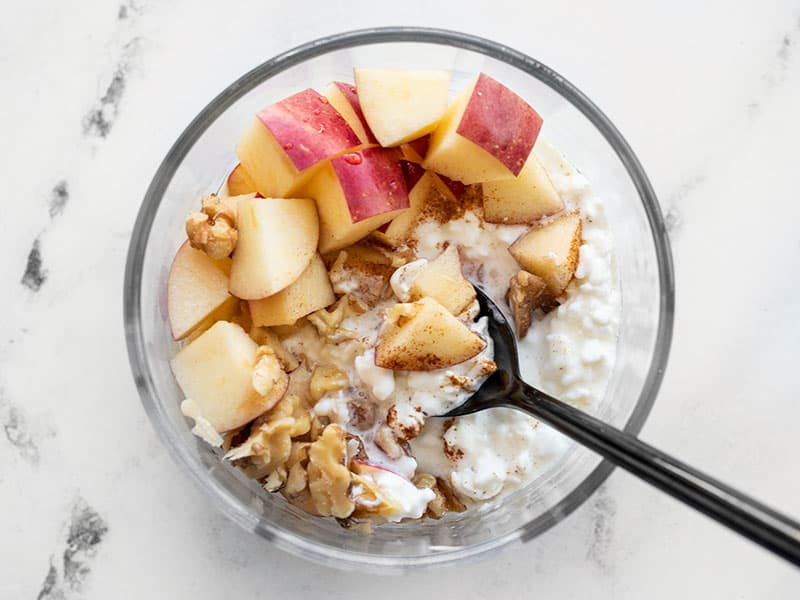

Apple Cinnamon Cottage Cheese Bowl

Description
Want to an enjoy an easy but filling and nutritious breakfast?
This easy 4 ingredient breakfast bowl recipe can be made within minutes and
is perfect for the busy person.
Ingredients
- Low Fat Cottage Cheese
- Apple
- Cinnamon
- Maple Syrup
Steps
- Cut apple into bite sized pieces
- Put apple pieces in a bowl with serving of cottage cheese
- Sprinkle some Cinnamon poweder
- Drizzle over some maple syrup
- Mix and Enjoy!